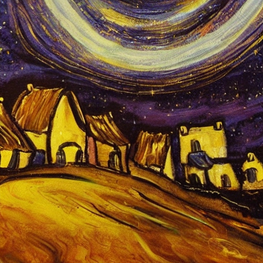

Welcome to the AI Art Experiment
Here we explore the creation of art by Artificial Intelligence (AI),
and the outcomes that it delivers.
Van Gogh
A hugely popular artist (at least in our times),
most people have seen some of Vincent Van Gogh's art.
In this study we asked AI to describe a few of Van Gogh's
paintings, then fed that description into AI image generators.
Below is the outcome, enjoy!
Starry Night
How the AI described Starry Night :
"starry night depicts a swirling night sky over a
small village in France. In this painting, the sky
is a mix of blues and yellows with white, circular
stars popping out throughout. In the foreground,
there is a small village which is characterized by
its small, yellow light in the homes and the shadows
it casts on the surrounding landscape."


Most of the interpretations above look like they might come from a class of students or amateur artists attempting to interpret Van Gogh's Starry Night. None of them captivate me like the original does.
The pieces are fine, but not impressive.
At this point I am not afraid of AI making art obsolete.
If you have anything to add please send me an email.
Contact
I would love to know what you think!
Please give a critical review, suggest other studies, or give a name to any of the art pieces by emailing me.
Thank you for visiting, I'm happy to hear from you.